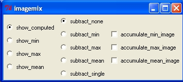
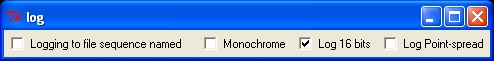

The CISMM Video Optimizer program is used to optimize video frames from a Microsoft DirectShow-compatible video file, from a Microsoft DirectShow-compatible camera, from a Roper Scientific camera, from a DiagInc SPOT camera, or from a set of TIFF or BMP files (it can read other, compressed file formats but these are not included in the default set because these file formats distort images in ways that affect tracking accuracy). The program currently runs only on Windows, but it uses the portable openGL library for rendering, the portable Tcl/Tk for user interface control, and the portable ImageMagick package for reading images.
The program can:
Planned features include speed improvement, and removal of imaging artifacts.
This program is distributed as "Thank-You Ware." As a National Research Resource, we are funded by the NIH National Institute of Biomedical Imaging and Bioengineering to develop tools for scientists. Part of our mission is to distribute these tools broadly to help biomedical researchers do their work.
Rather than making you register to download our software or join a mailing list or provide other personally-identifying material to use our code, we've come up with the following easy and anonymous way for you to let us know we're helping the community. When you press the "Say Thank You!" button to let us know you appreciate having the tool, the application sends a web query to our server and logs your response (not your name or your phone number, just a web hit count). We add up these counts and report them to the reviewers for our renewal applications when we ask NIBIB to continue funding us to maintain our existing tools and to build new ones. Please press the button whenever you feel like the tool has been helpful to you.
The program is run by dragging a video file or image file onto the desktop icon that was created when the program was installed. To select a stack of image files that are numbered consecutively, drag any one of the files onto the icon. It can also be run by selecting one of the camera-specific shortcuts from Start Menu/All Programs/NSRG/CISMM Video Optimizer v01.13. If you run the program directly by double-clicking on the icon, it will ask for a video or image file (AVI, TIF, or BMP) that it should open.
When the program is run and a file is selected, four windows will appear. The image window that appears on the lower right contains the first image within the video file or a continually-updating image from a live camera feed. The control panel named tk that appears on the left when the program is run (shown here to the right) contains a number of interaction widgets that control the operation of the program. The kernel control panel that appears above the image window (described later) controls the type of tracking kernel being used. The log control panel is described later.
If the video file (or video camera) contains different data sets in the red, green, and blue channels then you will need to select the one you want to view. By default, the red channel R is selected. To select a different channel, click on G for green or B for blue. The video window should change to display the selected channel.
A bit is a computer term for an entity that can take on two values, stored as zero and one. Using several bits in parallel enables the encoding of integers: binary notations is like decimal notation but each digit can only have the value zero or one before wrapping around. Counting proceeds as follows: 000, 001, 010, 011, 100 corresponds to decimal 0,1,2,3,4. Stacking 8 bits together (a bit depth of 8) covers the range 0-255. Stacking 12 bits covers the range 0-4095. The default bit depth in CISMM Video Optimizer is 8 bits per pixel. This is correct for AVI files and many common file formats. Most scientific cameras, however, operate at 12 bits per pixel. When such an image is loaded into CISMM Video Optimizer, it produces a strange-looking image with dark spots where there should be bright spots, or bands of dark and light. While this will not interfere with the tracking (it is only a problem of mapping 12 bits of color to 8 bits of displayable color on the screen), it looks unappealing. By adjusting the bit depth to exceed the number of bits that are used in the image, these colors can be brought into range. If you load a 16-bit image, this can be handled by clicking on the number below the slider and typing in 16; even though it exceeds the maximum slider value, it can be set in this manner. To repeat, this setting has no effect on tracking, only on the images shown on the screen. It also has no effect on the high-value cropping within 16-bit stored files: the screen only shows 8 bits, but if an image is saved as 16 bits then the data values above the high-crop line (see below) and the maximum stored value will be maintained in the stored file. It does affect the brightness in 8-bit stored files.
The brightness and contrast of the image can be adjusted using the gain control panel, which is displayed when the show_gain_control box is checked; this box is off by default. The control panel is shown to the right. The two sliders are used to bracket the range of brightness that is to be stored in the output file. By default, they cover the entire normalized range (0 to 1). The actual pixel-value range is determined by the setting of the bit_depth slider in the main control panel: 8 bits means values from 0-255 are the full range, while 12 bits means 0-4095. Every intensity below the clip_low setting is set to zero, every pixel above the clip_high value is set to maximum, and the intensities in between are stretched to cover the range represented by bit_depth. Note that if the output file is 8 bits, then it will contain the same values shown on the screen. If it is 16 bits, then the high-value cropping may not occur because there are more representable values in the file than can be shown on the screen; in this case, the stretching will still occur but the high values will still be present in the output file.
The auto check-box will cause the program to adjust the clipping values to bracket the actual intensity values found in the section of the file that is to be stored. This will automatically make the intensity span the available range for display, mapping all available colors to the display.
The red, green, and blue channels of the input image are scaled using the same settings.
Note: Adjusting the clipping values will produce variable gains in the intensity in the output file, relative to the actual intensities present in the input file. It should not be used if quantitative pixel values are required.
To reduce the size of the resulting image stack, it is possible the select only a sub-region of the video that is to be saved, cropping the video to the selected region. The region can be selected in one of two ways. The first is to press and hold the right mouse button at the center of the desired region and then drag the mouse to set one corner of the region. The second is to select the show_clipping checkbox in the tk control panel. This will bring up a new control window that lets you slide the four sides of the selection region within the image.
Whichever cropping method is used, a set of green lines will outline the region of video that is to be saved. If one of the lines is past the edge of the video frame, it will not appear. As new image features enter the frame (during playback), their pixels will appear in the final video. Anything past the edge of the video will appear as a black region surrounding the actual video.
Remember that objects will move as the video goes, so be careful to preview your video and make sure everything stays in the cropped region for the segment of video you are optimizing, with room to spare for any border around objects that you need.
When the show_imagemix_control check-box is checked, the imagemix control panel appears. This enables the calculation of min, max, and mean images, which are per-pixel operations on all images seen while the accumulate check-boxes are turned on. A set of radio buttons on the left displays these statistical images, and by default shows the computed image.
The computed image can either be the standard image as described above (when subract_none is) chosen in the central radio list or an image computed by subtracting one of the min, max, or mean images. It is also possible to subtract a single image from later images; when subtract_single is checked, the image will go grey (subtracted from itself) and later images will show the difference between the original image and the current image.
By default, the CISMM Video Optimizer only applies a translation to successive frames in the image and only provides one fiducial mark, which follows a point on the images that is to remain fixed in the output video.
If either or both of the reorient and rescale check-boxes in the Tcl menu are checked, a second fiducial mark appears. This mark is to be placed on a second point in each image that is to be kept at the same relative location compared to the (moving) first point. If reorient is selected, the images are rotated in-plane so that it points in always lies in the same direction from the first fiducial. If rescale is selected, the images are uniformly scaled so that it always lies at the same distance from the (moving) first point.
To select the fiducial feature in the first image, click on its center with the left mouse button. A red plus sign will move to the location you have selected. If you want to adjust its radius, click on the number beneath the radius slider within the kernel control panel and enter it into the dialog box that appears or by move the radius slider. When there are two fiducials shown, the nearest one will move to the location where the mouse button is pressed.
Note that when optimization is turned on, the tracker will always jump to the optimum location nearest the current location of the mouse cursor.
If you prefer to not have the centers of the tracked objects obscured by the tracking markers, select the round_cursor checkbox from the tk control panel. This will replace the plus signs with a circle around the center at twice the radius that the kernel is set to use.
There are three types of tracking kernels available in version 1.10, disc, cone, and symmetric. Their properties are controlled using interface widgets in the kernel control panel.
For tracking spots that are even in intensity, or which have uneven intensities within them but a defined circular edge, the disc kernel should be used. The radius should be set to match the radius of the spots you wish to track. The interpolate checkbox should be set for more accuracy and cleared for more speed.
For tracking spots that are brighter in the center and drop off to dim (or darkest in the center and ramp up to bright), the cone kernel should be used. For cone tracking, the radius should be set about 1/3 larger than the spots you want to track (giving the kernel a good sampling of the background as well as the spot). The setting of the interpolate check box does not matter for the cone tracker (this tracker always interpolates).
A parameter relevant for both the disc and cone kernel is whether the spots are dark points in a lighter background (the default) or lighter points in a dark background). This is controlled using the dark_spot check box located at the top of the user interface. You should set this for the type of spot you are seeking.
If the bead profile is changing over time, or if it does not fit well into one of the above categories, then the symmetric tracker should be chosen. This tracker operates by locating the minimum variance in concentric rings around the bead center. It sums the variance in circles of radius 1, 2, 3, ... up to the radius setting and divides each circle's radius by its circumference to provide even weights for each ring. The radius should be set to be at least slighly larger than the bead that is to be tracked; setting it larger will not harm tracking except to make the program run more slowly. The setting on the dark_spot check box has no effect when symmetric tracker is chosen.
The follow_jumps check-box activates a more-robust tracking algorithm that first looks for the best image match within 2 radiii of the prior position and then performs the standard kernel match. This makes the tracking run more slowly, but is more robust to bead motion between frames. It does not affect the accuracy or the style of the main optimization for the kernel, it is only used to initialize the new search location between frames.
Once you have selected the type of tracker to use, and have selected the fiducial track, you can check the optimize checkbox. When you do this, the fiducial will move to the centers of the spots it was started on. You do not have to turn on this optimization for the offset to work; if you select a fiducial that is not a spot, you should not turn it on. You should then move the fiducial mark to its new location after single-stepping through each video frame.
The location of the fiducial mark is shown in the x, y, and radius displays in the kernel window. Note that these may show subpixel positions and radii. You can control the minimum step size that the optimizer will use by adjusting the precision slider within the tk control panel. Smaller values make the program run more slowly but will result in the program attempting to find the position with greater precision (this will not necessarily correspond to greater accuracy, due to noise and possibly aliasing).
You can record the motion of the trackers by checking the Logging checkbox within the log control panel (shown to the right). This will bring up a dialog box that will let you select a filename. Once you have selected a file name, you check the play_video checkbox to begin going through the video file, or you can use the single_step_video repeatedly to step through a frame at a time. When you are finished with the section of tracking that you are interested in, uncheck the Logging checkbox to stop the logging. You can then go forward to another section, turn on logging, and save a different file sequence if you like. The files that are stored will have the format: filename.opt.nnnn.tif, where filename is the name selected above, and nnnn is replaced by the frame number from the video (starts at frame 0 and goes up by one for each single_step).
Logging will not occur while the file is paused, or when the end of the video has been reached (the last frame is stored either when you quit the program or when you stop logging). This is done so that you can place the trackers back onto spots that have jumped too far between frames when single-stepping through the video and still get an accurate record of where the spots went. There will be one file per frame of video stepped through or played through. Note: Some video files have a 30 frame/second playback but have three copies of the same video frame to produce an overall update of 10 frames/second; this will produce repeated location reports for each of the identical frames.
CISMM Video Optimizer saves 16-bit files by default. You can switch this to 8-bit files (which have less information but can be read by a wider variety of programs) by un-checking hte Log 16 bits checkbox.
CISMM Video Optimizer saves all three color channels (red, green, and blue) by default, but if only one channel is of interest (or for monochrome images), checking the Monochrome box will save grayscale images, which will be 1/3 the size on disk of color images.
Logging a spread function: It is possible to log the "spread function" of points, beads, or other objects in the video. This is done by checking the Log Point-spread box before turning on logging. If selected, the program will acquire data centered on the first tracker (number zero), whose radius is the same as the tracker radius. The spread function file is a radial average around the center (providing one line of the image for each video frame). The file will have the same name base name as the standard TIFF files, but the suffix ".psf.tif" and it will contain one line for each frame of the video that is optimized, with the first line at bottom of the image and the last line at the top. It can be used by the Video Spot Tracker program to estimate the Z location of beads or other radially-symmetric features in images.
Whether logging is turned on or not (for previewing to see how well the fiducial mark tracks, for instance), the video can be played by checking the play_video checkbox, and paused by unchecking it. The single_step_video checkbox will step forwards one video frame each time it is pressed. The rewind checkbox causes the video to rewind to the beginning, play the first frame of the video, and then pause. The FrameNum display shows which frame of a video file is currently being displayed.
This program is brought to you courtesy of the National Institutes of Health National Institute for Biomedical Imaging and Bioengineering through its National Research Resource in Computer-Integrated Systems for Microscopy and Manipulation at the University of North Carolina at Chapel Hill.
An installer for the program and manual can be downloaded from the CISMM software download page. To run it, you must also download and install version 01.05 or higher of the NSRG Runtime package, which is also available on that page. It also requires Microsoft Direct X version 9.0a or higher. If you want to open sets of TIFF files or other image file sets, you also need the 16-bit version of ImageMagick version 5.5.7. These packages can be installed in any order. The ImageMagick installer is included as part of the CISMM Video Optimizer installer.